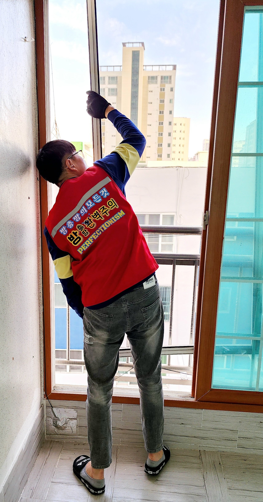
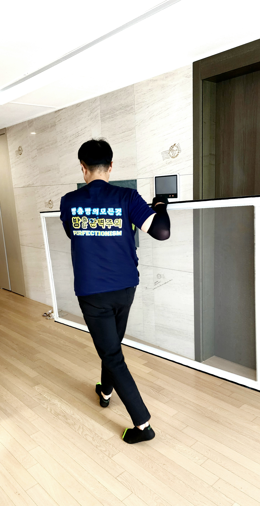
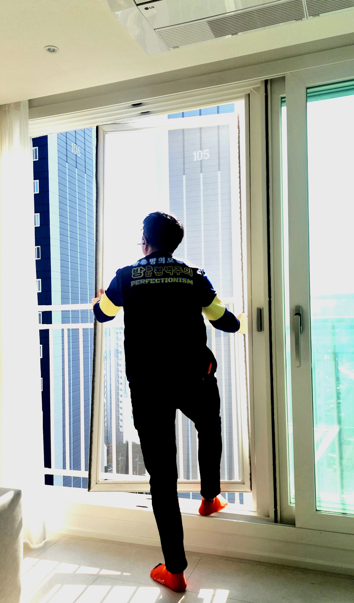

TRUSTED SCREEN SPECIALIST · ULSAN & YANGSAN
고객의 안심을
끝까지 책임집니다.
정직한 상담부터 꼼꼼한 시공과 사후관리까지, 믿고 맡길 수 있는 방충망 전문업체입니다.🤝정직한 상담
📐정확한 실측
🇰🇷국산 자재
🛠️시공 후 1년 AS
PERFECT STANDARD
집의 공기와 안전을
정확하게 지킵니다.
방충망완벽주의는 울산 울주군 본점을 중심으로 양산과 울산 동구까지 3개 지점에서 운영하고 있습니다. 방충망 교체와 제작, 수리와 시공까지 방충망에 대한 모든 일을 현장에 맞춰 진행합니다.
규격만 맞추는 시공이 아니라 창의 구조와 사용 환경을 확인하고, 필요한 제품을 정확하게 제안합니다.
FIELD WORK / 2026
공간에 맞춘
정확한 시공
창의 구조와 생활 동선을 먼저 살피고, 현장에 맞는 방충망을 완성합니다.


DETAIL / CARE
작은 틈까지
꼼꼼하게
정확한 실측과 마감으로 오래 편안하게 사용할 수 있도록 책임집니다.
